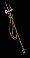

|

張龍
長矛
The Dragon Chang
Spear |
雙手傷害: 13
- 15 (平均傷害14)
等級需求: 8
耐久度: 30
武器基本速度: [-10]
+100% 對不死系生物傷害
+10 最小傷害值
增加 3-6 火焰傷害
+35 攻擊準確率
+2 照亮範圍
|
|

剃刀之叉
三叉戟
Razortine
Trident |
雙手傷害:
(11-13) - (19-22)
(變動) (平均傷害16)
等級需求: 12
力量需求: 38
敏捷需求: 24
耐久度: 35
武器基本速度: [0]
+30-50% 增強傷害
(變動)
減慢目標速度 25%
30% 增加攻擊速度
-50% 目標防禦
+8 敏捷
+15 力量
|
|

血之偷
叉
Bloodthief
Brandistock |
雙手傷害:
(10-11) - (25-28)
(變動) (平均傷害18)
等級需求: 17
力量需求: 40
敏捷需求: 50
耐久度: 28
武器基本速度: [-20]
+50-70% 增強傷害
(變動)
35% 撕開傷口機率
8-12% 擊中偷取生命
(變動)
+26 生命
+10 力量
|
|

雅該長矛
大戰戟
Lance of Yaggai
Spetum |
雙手傷害: 15 - 23
(平均傷害19)
等級需求: 22
力量需求: 54
敏捷需求: 35
耐久度: 28
武器基本速度: [0]
增加 1-60 閃電傷害
所有抗性 +15
40% 增加攻擊速度
攻擊者受到傷害 8
|
|
坦之血杖
矛
The Tannr Gorerod
Pike |
雙手傷害:
(25-28) - (113-126)
(變動) (平均傷害73)
等級需求: 27
力量需求: 60
敏捷需求: 45
耐久度: 25
武器基本速度: [20]
+80-100% 增強傷害
(變動)
增加 23-54 火焰傷害
+60 攻擊準確率
火燄抵抗 +15%
15% 最大火燄抵抗
+30 生命
+3 照亮範圍 |